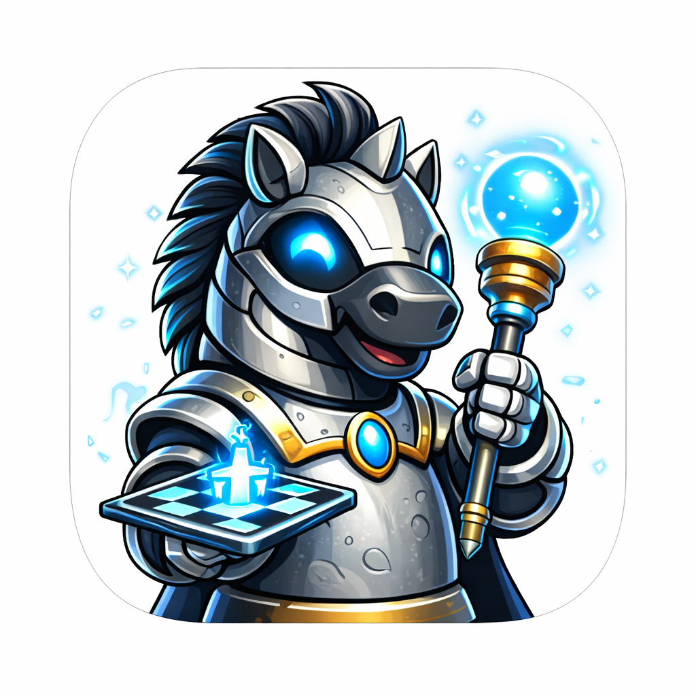
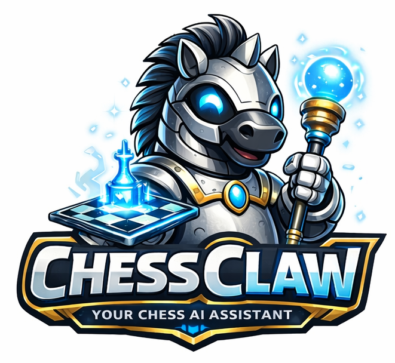
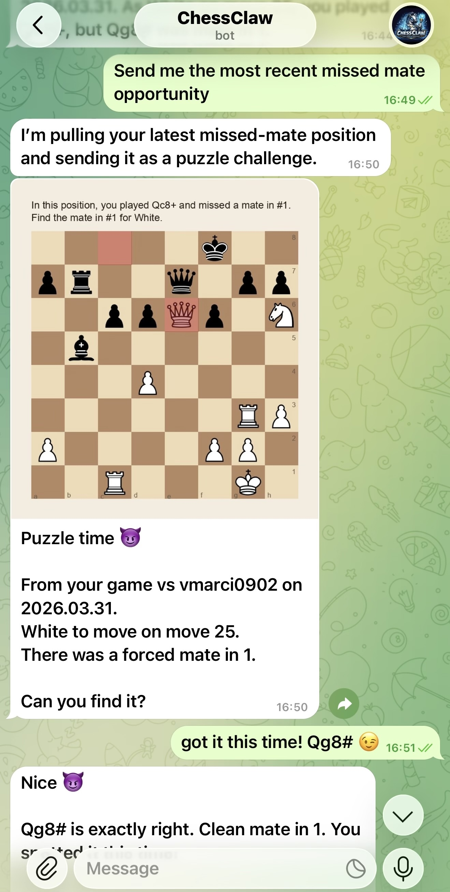
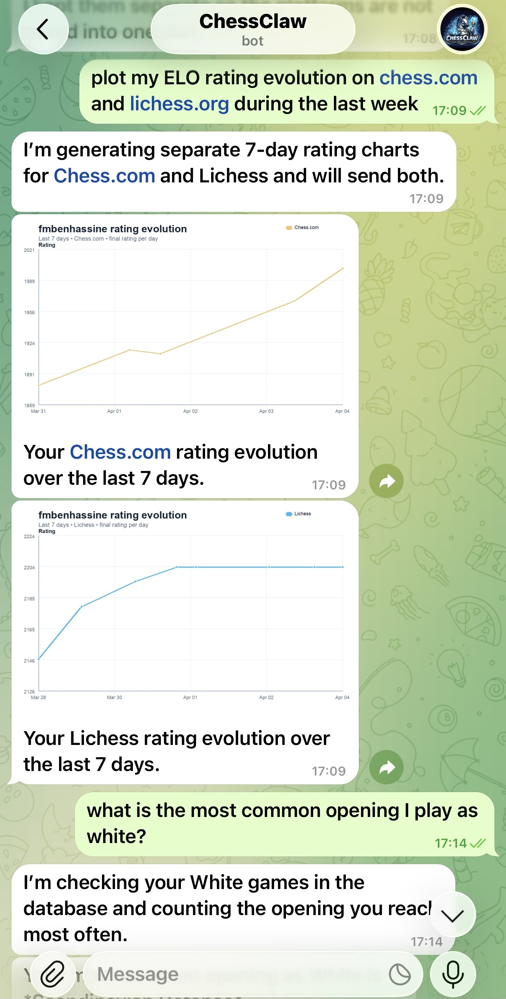
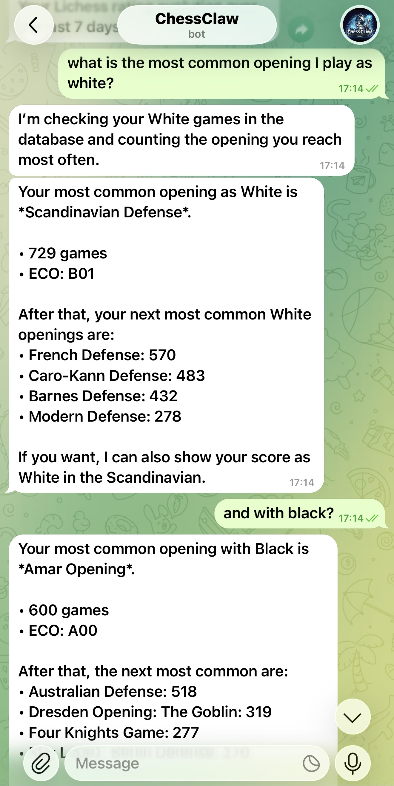

Game Sync
Import and sync games from Lichess.org and Chess.com into a single local database.

ChessClawChessClaw watches your games on Lichess.org and Chess.com, brings them into a single database, analyzes tactical misses, renders training puzzles, and answers natural-language questions about your chess games.

ChessClaw is focused on one job: helping you understand, organize, and improve your chess through a secure personal assistant that works from your own data.
Import and sync games from Lichess.org and Chess.com into a single local database.
Ask questions about openings, opponents, results, trends, recent games, or tactical mistakes.
Run Stockfish-backed analysis to find missed mating opportunities and review them later.
Turn missed tactics into visual puzzle images you can review on demand or on a schedule.
Set recurring jobs for syncs, insights, reminders, and training flows that message you back.
Turn your own missed opportunities into repeatable study material instead of generic puzzle feeds.
ChessClaw is intentionally lean: one Node.js process, one assistant workspace, one configured chat, one persistent chess database, and isolated agent runs.
The host handles Telegram, task scheduling, database access, and trusted chess scripts. The assistant runs in an isolated container and uses MCP tools to query the chess database, sync games, analyze positions, and render puzzle images.
One process, a small codebase, and a clear data flow you can actually audit.
Agent sessions run in containers and only see explicitly mounted directories.
Not a generic framework. It is working software shaped around a real chess workflow.
No wizard-heavy setup. Codex guides installation, customization, and debugging.
New capabilities should arrive as transformation skills, not permanent complexity in core.
The assistant exists to help you improve at chess, not to become a general-purpose chatbot.
$>git clone https://github.com/fmbenhassine/chessclaw.git
$>cd chessclaw
$>codex

